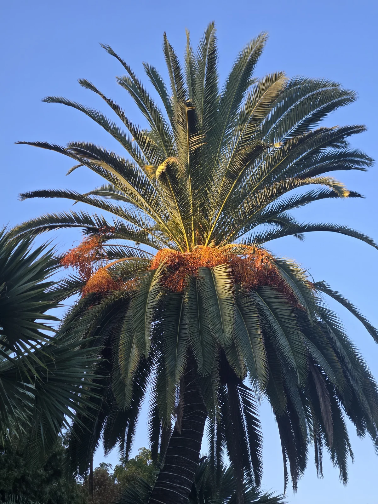

I hear this question constantly: Are you going to spray the crown?
It is a fair question. The South American palm weevil attacks a Canary Island date palm at the top, so owners naturally expect the treatment to be applied at the top. Some companies make crown or canopy spraying a visible part of their program. That can make it feel like the treatment that matters most.
My answer is more specific: a crown treatment can be worthwhile, but it is not automatically necessary for every preventive visit, and it should not be used as a substitute for a sound systemic program.

First, “crown treatment” can mean two different things
This is where many conversations become confusing. Not every material directed into a crown works the same way.
A contact crown or canopy spray is applied to exterior surfaces. Its job is to reach adult weevils directly or leave a residue that can affect adults landing, walking or feeding on treated tissue. It can also be used on pruning wounds when the pesticide label allows that use. This is the kind of exterior crown spray most owners have in mind.
A systemic crown drench is different. It places a systemic insecticide into the crown so the material can enter palm tissue. Systemic products may also be applied through other labeled routes, including the soil or trunk. The route changes, but the essential point is that the insecticide is taken into the palm rather than remaining only on an exterior surface.
Those two approaches should not be lumped together. One primarily works through contact or residue on the outside. The other is intended to move into the palm.
The larvae are what destroy the palm
Adult weevils matter because they arrive, mate and lay eggs. But the larvae that hatch inside the palm do the destructive feeding. They tunnel through the soft tissue concentrated around the apical meristem—the palm heart that produces new fronds. Enough feeding in that area can stop new growth, collapse the crown and kill the palm.
That is why systemic protection is the foundation of my preventive approach. UC Riverside explains that systemic insecticides move within the palm and accumulate in meristematic tissue where the larvae feed. In practical terms, the material is carried to the part of the palm the weevil larvae are consuming.
An exterior contact spray does not replace that internal protection. A residue on the canopy may affect adults. It does not become a systemic simply because it was sprayed near the growing point.
What a contact crown spray can add
I am not dismissing crown spraying. It can be a useful additional layer when the palm, site, pest pressure and pesticide label support it.
- Adult exposure: a contact material may kill adults it reaches or adults that contact a treated residue.
- Pruning-related protection: freshly cut or damaged tissue can be attractive to palm weevils, and a labeled application may be appropriate around that event.
- Known or suspected activity: a crown-directed treatment may be part of a more aggressive response when evidence suggests the palm is already under attack.
- Layered management: UC Agriculture and Natural Resources notes that crown spraying used with a soil systemic has performed well for control of infested palms.
That last point needs context. Guidance for treating an infested palm is not the same as saying every healthy palm requires an exterior crown spray at every preventive visit. Once active infestation is suspected, the objective, urgency and treatment combination may change.
Why I do not make exterior crown spraying automatic
A tall Canary Island date palm is not an easy spray target. Reaching the central crown thoroughly can require specialized equipment and favorable access. Wind, heat, nearby structures, pools, people, neighboring property and runoff all matter. The label may limit when, where and how an application can be made.
Coverage also matters. A crown spray that looks dramatic from the ground is not necessarily a complete application to the meristem. On a very tall palm, the material has to reach the intended tissue rather than disperse into the surrounding property.
Exterior residues are also exposed to weathering and new growth. Their useful life depends on the product, label, surface, application quality and conditions after treatment. That is fundamentally different from a systemic material that has entered the palm and is moving into the tissue where feeding occurs.
None of this means a systemic treatment is infallible. Uptake takes time and depends on the application route, palm health, soil and irrigation conditions, product characteristics and proper timing. Treatment does not guarantee survival. It means the preventive program is aimed at the internal feeding site rather than relying only on an exterior barrier.
My preventive framework
For a valuable mature CIDP, I work through the decision in this order:
- Look at the entire palm and crown. I want to know whether this is truly preventive work or whether visible change requires a different response.
- Choose the systemic route that fits the palm and site. The product label, access, soil conditions, irrigation, trunk condition and property constraints all matter.
- Keep the protection on schedule. A one-time application is not a long-term management program in an area with continuing weevil pressure.
- Photograph and compare. Whole-palm and crown photographs help identify changes in new growth, symmetry, color and frond position between visits.
- Add crown-directed treatment when it has a reason. Elevated adult pressure, pruning, suspected activity or a treatment plan for an infested palm may justify another layer. It should be a decision, not theater.
The question to ask is not “Did you spray the top?”
The better questions are:
- Is the program systemic, contact-based, or both?
- What part of the weevil's life cycle is each treatment intended to affect?
- How does the material reach the meristematic tissue where larvae feed?
- Is the application method on the pesticide label for this site and palm?
- What is the return interval, and who is responsible for keeping it on schedule?
- What changes in the crown should trigger a faster response?
A provider should be able to explain those points without hiding behind the visibility of a spray rig. More liquid in the air does not automatically mean more protection in the palm.
My bottom line
If a crown spray is appropriate, I have no objection to using it as part of a layered program. UC guidance supports crown-directed treatments in the right circumstances, particularly when an infestation is being treated.
But for preventive management of an apparently healthy Canary Island date palm, I do not believe owners should judge the quality of a program by whether the canopy was sprayed from the outside. The essential question is whether an appropriate systemic treatment is reaching the tissue the larvae eat—and whether that protection is being maintained before visible decline appears.
The crown is where the damage becomes visible. The systemic is how I aim protection at the feeding site before that damage takes over.
Sources and further reading
- UC Riverside Applied Biological Control Research — Biology and Management of South American Palm Weevil in California
- UC Agriculture and Natural Resources — South American Palm Weevil Management Options
- Arthropod Management Tests — Efficacy of Soil- and Trunk-Injected Systemic Insecticides Against South American Palm Weevil
Build the treatment around the palm—not the spectacle.
If you own a mature Canary Island date palm in San Diego County, I can assess its visible condition and discuss a preventive program appropriate to the palm, property and pesticide label.
Request a palm assessment, review SAPW prevention and treatment, or call or text 262-492-3135.